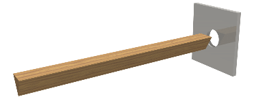

Ever since we were small children, we have learned that square pegs do not fit into round holes. This is so much the truth that it has become a figure of speech in the English language. However, very little is ever said about triangular pegs. Have you ever wondered whether or not they would fit into round holes?

In this problem, you are given a description of a set of triangular pegs and round holes. You are to determine whether or not these triangular pegs would fit through the round holes.
Each peg is a perfect triangular prism where the lengths of the three sides of the triangular face are given. Each hole is a perfect circle with its diameter given. All pegs are longer than the diameter of the largest hole.
The first line of the input file contains a number M (1 ≤ M ≤ 100), the number of holes. The next line contains a sequence of M positive real numbers that describe the diameters of the holes. The first such number is the diameter of hole 1, the second of hole 2, and so on.
A single number N (1 ≤ N ≤ 26), the number of pegs, appears on the next line. N lines of input, each containing three real numbers describing the lengths of the sides of a triangular face, follow. The pegs are named 'A' through 'Z', so that first such line describes peg A, the second peg B, and so on.
For each triangular peg, write one line indicating the holes that the peg will fit into, in the increasing numerical order given. Follow the format shown in the sample output. If a peg will not fit into any of the holes, output a line containing the text "Peg * will not fit into any holes", where * is the name of the peg.
3 4.0 5.0 6.0 3 3.0 4.0 5.0 5.0 5.0 5.0 4.5 4.5 8.0
Peg A will fit into hole(s): 2 3 Peg B will fit into hole(s): 3 Peg C will not fit into any holes